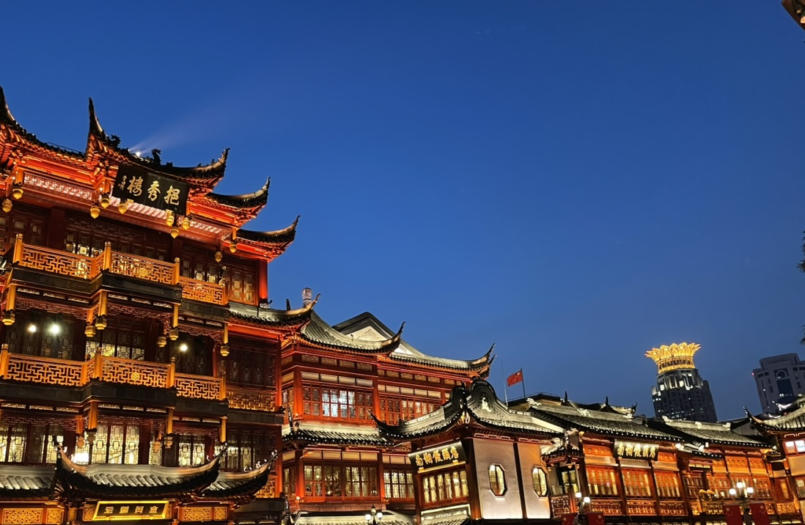
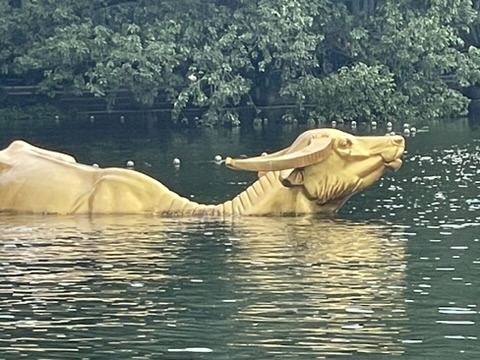
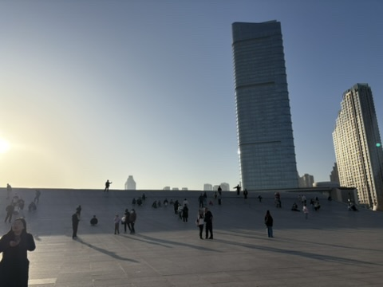

旅游指南
这里总结了上海、杭州和大连的推荐景点、交通方式、地铁乘坐方法及旅行必备信息。
上海｜未来都市与历史的融合

推荐景点
- 外滩｜近现代建筑群，夜景迷人
- 豫园与豫园商城｜感受古典中国风情的庭院与购物街
- 东方明珠塔｜上海地标，登塔俯瞰城市美景
交通信息
- 【浦东国际机场至市中心】磁悬浮列车＋地铁2号线，约30分钟
- 【虹桥机场至市中心】地铁2号线或10号线直达人民广场站
地铁出行
上海地铁线路密集，几乎可以到达所有主要景点。
推荐使用“上海交通卡”，方便快捷。
杭州｜“最接近天堂”的美丽湖畔城市

推荐景点
- 西湖｜被列为世界遗产的绝美湖泊
- 灵隐寺｜中国最著名的佛教寺院之一
- 龙井茶村｜体验正宗茶文化
交通信息
地铁出行
西湖周边多以步行或公交出行为主，市中心区域可使用地铁。
推荐使用“杭州地铁”APP查看线路图。
大连｜充满异国情调的港口城市

推荐景点
- 中山广场｜大连市中心的历史建筑群
- 星海广场｜中国最大的广场，临海美景
- 老虎滩海洋公园｜集水族馆与游乐园为一体的人气景点
交通信息
- 【从大连周水子机场到市中心】乘坐出租车或地铁2号线，约20分钟
地铁出行
大连地铁线路较少，但乘坐2号线可以方便到达主要景点。
旅行前必备事项
必备应用程序
- 微信（WeChat）｜聊天、支付、信息收集必不可少
- 支付宝（Alipay）｜电子支付工具
- 百度地图｜在无法使用Google地图的地区非常方便
→ 中国旅行必备应用与签证信息总结
签证信息
日本国籍持有者短期旅游（30天以内）一般无需签证（请事前确认最新信息）。
Wi-Fi与eSIM相关
- 出发前可预订或购买便携Wi-Fi或eSIM卡
- 在中国大陆，Google、LINE、Instagram等无法直接使用（需要VPN）
- 建议提前安装VPN应用（如ExpressVPN、Surfshark等）以备不时之需
常用中文短语集
→ 点击查看旅行中实用的中文短语
返回首页